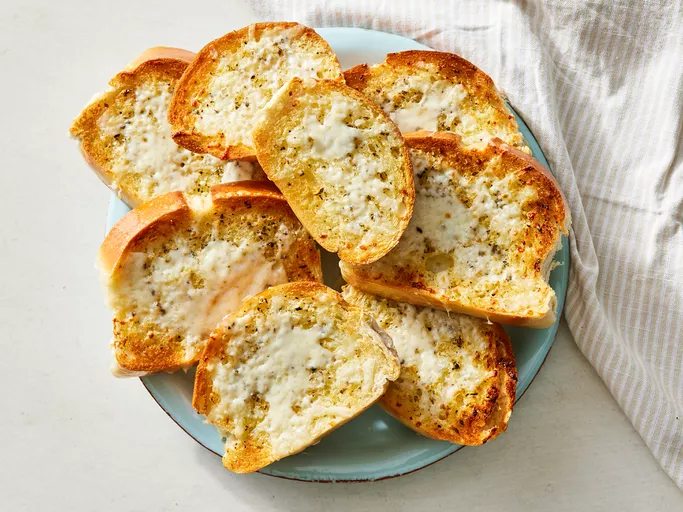

Garlic Bread

Description
A quick and easy toasted garlic bread recipe that will complement any italian meal. You can also make your own improvements on this by adding melted cheese or seasoning.
Ingredients
- 1 loaf of Italian bread
- 5 tbsp of butter (Ideally softened)
- 3 cloves of garlic
- 2 teaspoons of extra virgin olive oil
- 1 teaspoon of dried oregano
- Salt and Pepper
- 1 cup of shredded mozzarella
Steps
- Gather and arrange all ingredients
- Set an oven rack about 6 inches from the heat source and preheat the oven's broiler. Cut loaf into ten 1-inch slices.
- Mix butter, garlic, oil, oregano, salt, and pepper together in a bowl; spread butter mixture on one side of each slice of bread; arrange bread slices, butter-side up, in a single layer on a baking sheet.
- Cook under the preheated broiler until slightly brown, checking frequently so they do not burn, about 3 minutes.
- Top bread slices with cheese and return to broiler until cheese is slightly brown and melted, about 2 minutes.
- Serve hot.